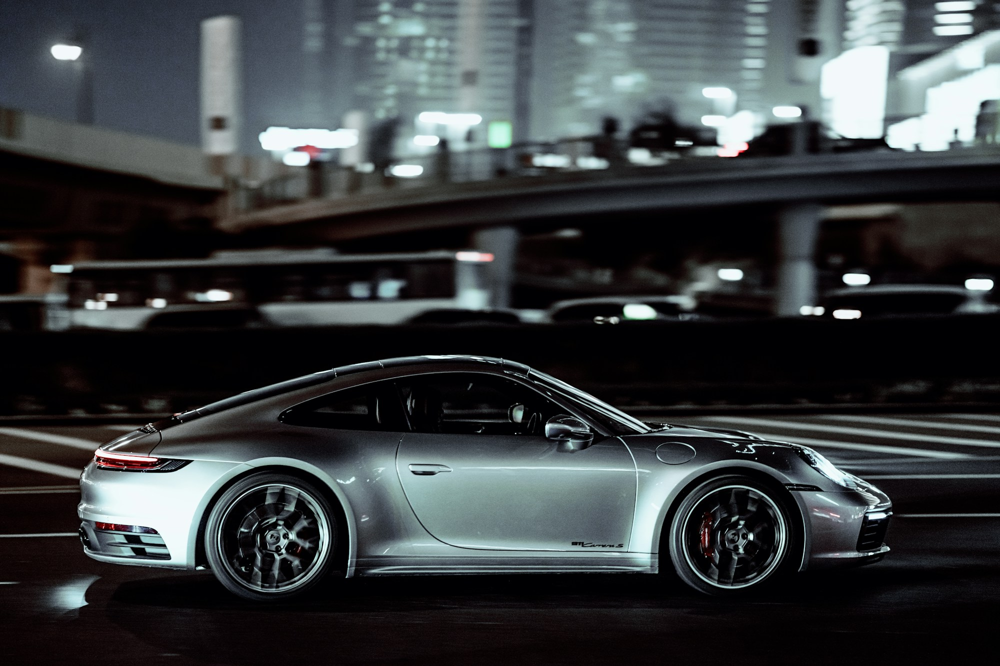
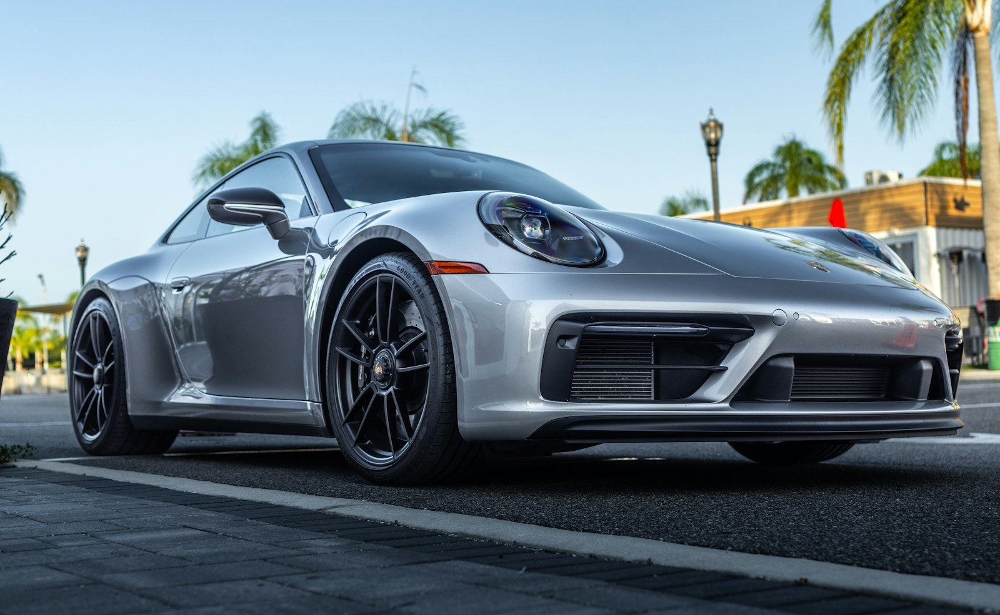

ХАРАКТЕРВ ДВИЖЕНИИ.

Porsche 911 Carrera S
У каждого —
свой темперамент.
От первого взгляда до первого поворота.
Исследуйте автомобили, которые
умеют говорить без слов.
Место для вашего фаворита.
Нажмите на закладку у автомобиля — он появится в вашем гараже.

ФОРМА, КОТОРУЮ ЧУВСТВУЕШЬ.Красивые
машины.
Настоящие
чувства.
Щелчок ремня. Ладони на руле. Тихая пауза перед запуском двигателя. Мы верим, что именно с таких деталей начинается ваш автомобиль.
В нашей галерее у каждой модели есть характер. Осталось встретить тот, который совпадёт с вашим.
Знакомство начинается здесьХорошие вещи
начинаются
с разговора.
01Находим ваш ритм
Городские маршруты, свободные выходные или дальние путешествия? Начнём с того, как вы живёте и что любите в дороге.
02Внимание к деталям
Сравните кузова, характер и бюджет. Сохраните понравившиеся модели в «Мой гараж», чтобы собрать личную коллекцию.
03Планируем знакомство
Сформируйте запрос на подбор или тест-драйв. В этой демоверсии его можно скачать и сохранить для следующего шага.
ВАШ ХОД.
Расскажите, какой автомобиль
заставляет ваше сердце биться чаще.